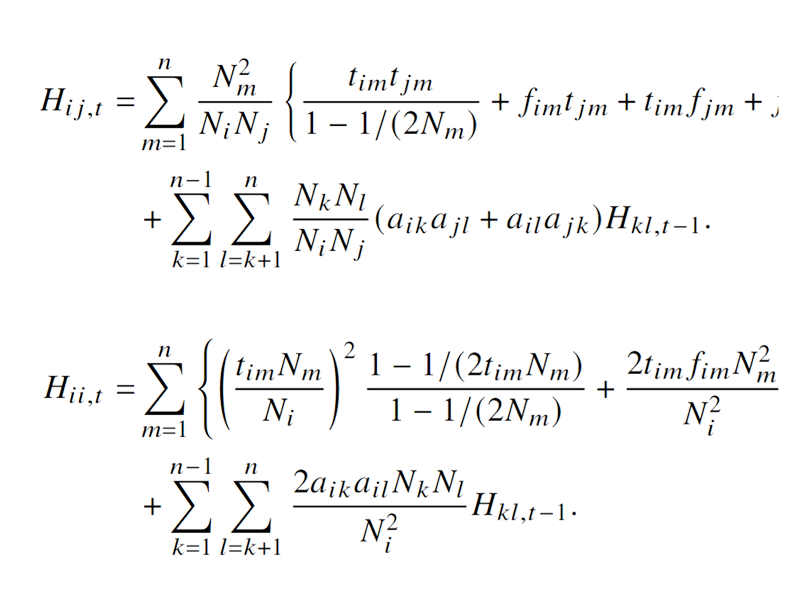
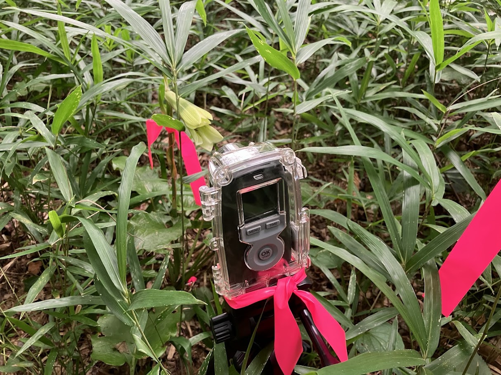
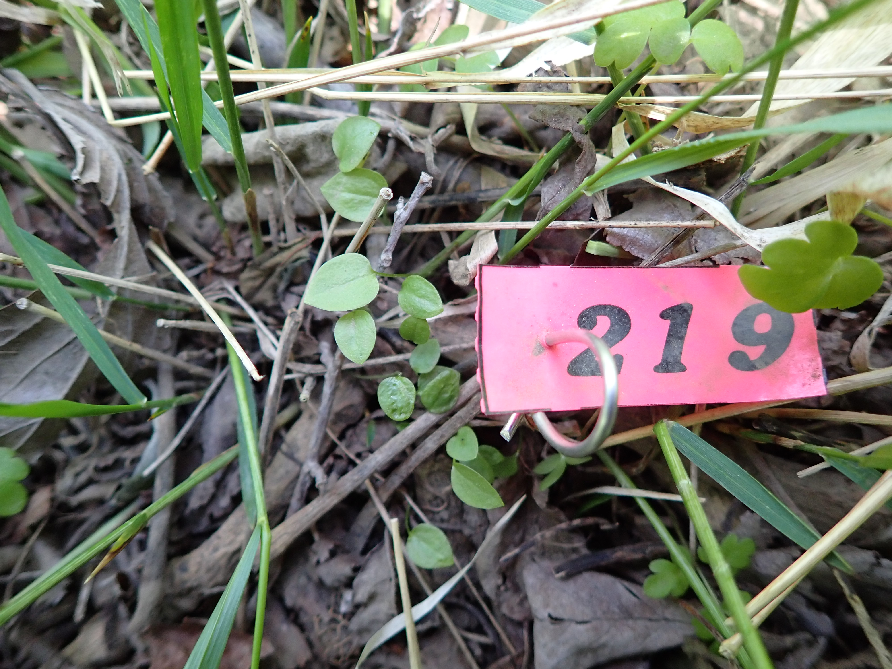

都築研究室
Laboratory of Plant Life History and Biodiversity
東京大学 大学院農学生命科学研究科
附属生態調和農学機構
当研究室は、自然界で生物多様性が形成・維持される仕組みを、
植物の「生活史」に着目して研究しています。











プロフィール

| 氏名 | 都築洋一 (Yoichi TSUZUKI) |
|---|---|
| 現所属 | 東京大学大学院農学生命科学研究科 附属生態調和農学機構 助教 |
| 学位 | 博士（環境科学）（2023年3月 北海道大学） |
| メールアドレス | tsuzukiyoichi <at> g.ecc.u-tokyo.ac.jp (<at> を@に替えてください) |
| 所属先住所 | 〒188-0002 東京都西東京市緑町１－１－１ 東京大学大学院農学生命科学研究科 附属生態調和農学機構 |


連絡先
| メールアドレス | tsuzukiyoichi <at> g.ecc.u-tokyo.ac.jp (<at> を@に替えてください) |
|---|---|
| 所属先住所 | 〒188-0002 東京都西東京市緑町１－１－１ 東京大学大学院農学生命科学研究科 附属生態調和農学機構 |